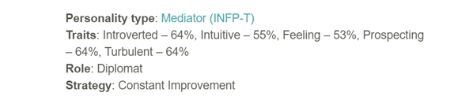

The following is a result of the Myers-Briggs Personality test from 16personalities.com.
The results state that my personality type is a mediator, but the biggest thing to take from these results are that I am 64% introverted, this could be a factor when forming a team and once the team is formed, initial communication would face some difficulty as there is trouble with speaking with “strangers”. Another trait that could have a negative effect on group projects is the 64% prospecting trait, which has the tendency to be indecisive and has problems committing to a singular task as getting side-tracked often occurs, thus slowing down the progress of the group project. The prospecting trait isn’t all negative however, as the website declares that a prospecting personality type can provide a good amount of creativity and productivity, which would be an incredible problem-solving tool for group projects. The role category says that my personality type is a diplomat. On the website, it states that a diplomat wants to help and connect with others, and they would rather cooperate with one another instead of competing. This trait is an important trait when it comes to working as a team as cooperation is vital when it comes to working together on a project as a group. The results of this personality test overall are saying that while finding a team may be hard and initial meeting will be challenging as well as the struggle to start a project, once a rhythm is set and I am comfortable with the group then production will go smoothly through my contribution in the creative department as well as the cooperative nature of my personality type.
The next is the result of my online learning style test from educationplanner.org
The results of this test states that I am predominantly an auditory and tactile learner. This means that I can learn better by listening and hearing the information and means that writing and reading out the notes and information myself would assist in remembering. I am also a tactile learner, which is learning through, essentially, movement. I can remember information more if it includes movement and physical activity. This can assist in working as a group as there is a lot of verbal communication with meetings so this means that being an auditory learner will assist in gathering information better through talking and discussing with the group. The project work tends to usually be hands-on, so this improve my ability to learn as I am a tactile learner.
The final test result is from mindtools.com.
The results shows that my creativeness needs to further be worked on. This shows me that my perspective on solving need to be expanded. This can be done quite easily in group projects and as communication is quite often done in group projects, which will develop my perspective on different solutions for problems due to differences in insight within the group members.